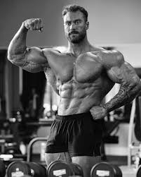
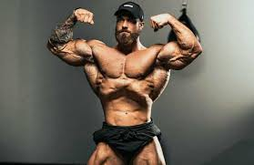

¿Quién es?
¿Quién es? Culturista profesional canadiense, considerado el rostro moderno de la categoría Classic Physique. Es famoso por su físico estético, simétrico y su dominio en competencias internacionales.

El culturista que hizo de la estética un estándar.
Esta página está dedicada a explicar quien es Chris Bumstead, su historia, records, colaboraciones, el exito y la manera en que cambio el fisiculturismo por crossfit
Comenzar¿Quién es? Culturista profesional canadiense, considerado el rostro moderno de la categoría Classic Physique. Es famoso por su físico estético, simétrico y su dominio en competencias internacionales.

Chris Bumstead comenzó en el mundo del entrenamiento durante su adolescencia en Canadá, motivado en gran parte por su entorno cercano, especialmente su cuñado, quien ya competía en culturismo. Al inicio entrenaba de forma básica, pero pronto mostró una genética destacada para desarrollar un físico estético. Con el tiempo, su interés pasó de ser recreativo a competitivo. Empezó a participar en torneos locales, donde rápidamente llamó la atención por su simetría y proporciones, características clave que más tarde lo llevarían a enfocarse en la categoría Classic Physique. Su disciplina desde joven fue fundamental para que evolucionara en poco tiempo dentro del culturismo profesional.

Primer campeonato: Su gran salto fue en el Mr. Olympia, donde ganó por primera vez en 2019 en la categoría Classic Physique, iniciando una racha dominante.
Física estética clásica (inspirada en la “era dorada”)
Excelente simetría y proporción
Disciplina extrema en entrenamiento y dieta
Mentalidad competitiva constante
Ha trabajado con marcas como Gymshark y RAW Nutrition, además de colaborar con otros atletas y creadores fitness en contenido y proyectos.
Hasta ahora no se ha retirado oficialmente, pero ha mencionado en entrevistas que no planea competir indefinidamente, priorizando su salud a largo plazo.
Algunos nombres que podrían tomar su lugar en Classic Physique:
Ramon Dino
Urs Kalecinski
Chris Bumstead (aunque sigue activo, marca la referencia)